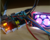
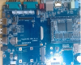
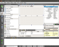
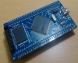
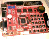
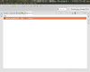

-

树莓派 Raspberry
本类别主要是树莓派Raspberry开发知识分享,涉及树莓派内核编译移植,UI开发等.获取更多内容，点击进入该分类...
-

嵌入式学习
基于ARM CORTEX A8开发板的各种嵌入式项目分享,主要涉及ubuntu armv7文件系统的建立等.获取更多内容，点击进入该分类...
-

QT5编程学习
LINUX下QT5的UI编程,涉及嵌入式QT界面开发等.用QT来展现不一样的想法。获取更多内容，点击进入该分类...
-

STM32 开发
在LINUX平台下的STM32开发,涉及各种项目实践以及学习笔记.有任何想法和问题，欢迎评论探讨。
-

AVR MCU 开发
在LINUX平台下的avr开发,分享各种模块源代码.有任何想法和问题，欢迎评论探讨。
-

安卓开发学习
在eclipse上进行android软件开发,主要针对通讯程序开发,实现智能上位机.有任何想法和问题，欢迎评论探讨。
-
各类杂项
各个项目以及生活中碰到的琐事,以及解决方法.